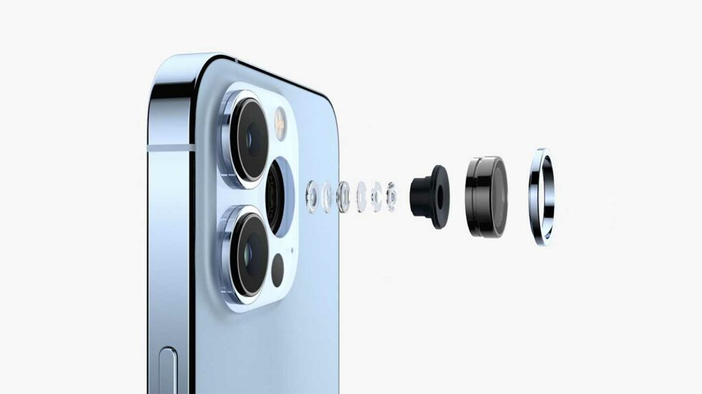
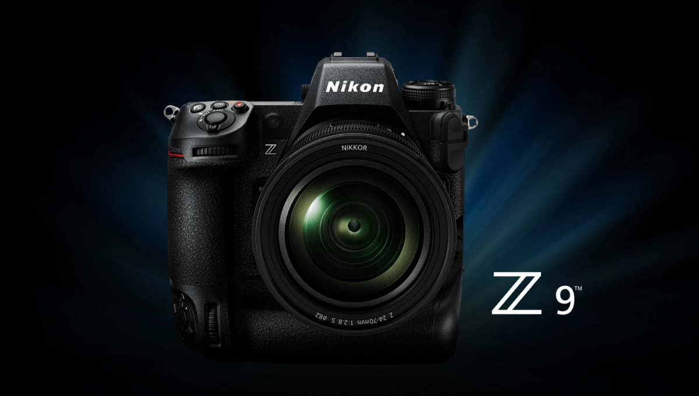

-
تکنولوژی
دستهبندی
تکنولوژی>دوربین
جدیدترین اخبار حوزه های متنوع تکنولوژی: موبایل، تبلت، لپ تاپ، گجت،اپلیکیشن، بازی، دوربین و …
داغ ترین مطالب
آخرین اخبار

سونی: کیفیت عکاسی با موبایل تا سال 2024 از دوربینهای DLSR هم بهتر میشود
«تروسی شیمیزو» ادعا کرد که دوربین گوشیهای موبایل تا سال 2024 به اندازهای قدرتمند خواهند شد که میتوانند عکسهای بهتری نسبت به دوربینهای DSLR بگیرند.
نگاهی به فناوری دوربین آیفونها در یک دهه اخیر؛ گوشیهای اپل چقدر پیشرفت داشتهاند؟
آیفونها همیشه به عنوان یکی از بهترین گوشیهای هوشمند دنیا در زمینه دوربین شناخته شدهاند. در حقیقت بخش بزرگی از زمانی که گوشیهای اپل در بازار حضور داشتهاند، یا بهترین دوربین را داشتهاند یا در جمع بهترینها بودهاند.
الجی روی توسعه نسل جدیدی از لنز کار میکند؛ منتظر دوربینهایی به ابعاد کوچکتر باشیم؟
کمپانی LG روی فناوریهای مختلفی کار میکند که تعدادی از آنها به حوزه دوربینها مربوط میشود. در حال توسعه نوعی لنز جدید برای دوربینها هستند که «متالنز» (Metalens) نامیده میشود ...
هواوی در حال توسعه فناوری دوربین سه بعدی برای بررسی سلامت پوست است
هواوی در حال کار روی یک فناوری دوربین سه بعدی است که میتواند ساختار چهره و پوست کاربران را تجزیه و تحلیل کند.
الجی با متالنز آینده صنعت دوربینها را متحول خواهد کرد
الجی در حال کار روی فناوریای به نام متالنز است که میتواند با استفاده از شیشهی تخت، اندازهی دوربین را کاهش درخورتوجهی دهد.
بررسی عملکرد دوربین گلکسی اس 22 اولترا در شب
در این مطلب عملکرد دوربین گلکسی اس 22 اولترا را در شب بررسی کردهایم تا ببینیم به عنوان بهترین پرچمدار سامسونگ، چه حرفهایی برای گفتن دارد.
آیفون 15 پرو مکس احتمالا اولین و تنها آیفون ۲۰۲۳ مجهز به لنز پریسکوپی خواهد بود
لنز پریسکوپی اولین بار در آیفون 15 پرو مکس استفاده میشود. در سال ۲۰۲۴ شاهد استفاده از این لنز در آیفون 16 پرو و آیفون 16 پرومکس خواهیم بود.
پاناسونیک لومیکس GH6 معرفی شد: بالاترین رزولوشن در یک دوربین میکرو چهارسوم
پاناسونیک پس از کمی تاخیر بالاخره از جدیدترین دوربین میکرو چهارسوم خود با نام لومیکس GH6 (Lumix GH6) رونمایی کرد.
آخرین اخبار
گوپرو در پی توسعه محصولات جدید: دوربینهای تخصصیتر خواهیم ساخت
شرکت GoPro میخواهد از سال آینده میلادی خط تولید دوربینهای خود را توسعه دهد و در کنار مدلهای Hero و Max، دو مدل دوربین جدید عرضه کند.
مرگ دوربینهای DSLR چه تاثیری بر دنیای طراحی لنزها خواهد داشت؟
برای برخی از علاقهمندان به دنیای عکاسی یا فعالان حرفهای در این عرصه، دوربین نقش کلیدی و اساسی را باز میکند و سایر موارد به عنوان ابزارهای جانبی در پیرامون آن قرار میگیرند. در سوی دیگر بعضی از افراد توجه بیشتری به لنزها دارند و...

میکروبالنهای قابل بازیافت: روشی جدید برای ثبت تصاویر هوایی
وقتی صحبت از تصویربرداری هوایی با کیفیت بالا به میان میآید، معمولا به سراغ ماهوارهها، پهپادها یا هواپیماهای بزرگ میرویم. اما اخیرا شرکت Urban Sky سیستمی با میکروبالن های قابل بازیافت...
کانن دیگر مدل جدیدی از دوربینهای DSLR پرچمدار معرفی نخواهد کرد
مدیرعامل کانن در مصاحبه جدیدی اعلام کرده که بازار به سرعت در حال تغییر و حرکت به سمت دوربینهای بدون آینه است.
جدیدترین سنسور دوربین سونی برای گوشیهای هوشمند دو برابر نور بیشتری جذب میکند
سونی از سنسور دوربین جدیدی رونمایی کرده که برای دو برابر کردن جذب نور، از فناوری «پیکسلهای ترانزیستوری دو لایه» استفاده میکند.
محققان دوربین رنگی باکیفیتی به اندازه یک دانه نمک ساختند
محققان دانشگاه پرینستون و دانشگاه واشنگتن دوربین بسیار ریزی به اندازه یک دانه نمک ساختهاند که میتواند تصاویر واضح و رنگی بگیرد.
دوربین فوجی فیلم Instax Mini Evo با قابلیت ارسال تصاویر به موبایل معرفی شد
شرکت فوجی فیلم از دوربین دیجیتال جدیدی به نام Instax Mini Evo رونمایی کرده که عکسهای آن را بلافاصله میتوانید روی Instax Mini Filmچاپ کنید.
شیائومی ۱۲ با حفره کوچکتر دوربین سلفی و نسبت نمایشگر به بدنه بالا از راه میرسد
شیائومی ۱۲ درهفتههای پایانی ۲۰۲۱ یا اوایل ۲۰۲۲ از راه میرسد، با این حال مدتهاست شاهد انتشار گزارشها درباره آن هستیم.
آخرین اخبار
نیکون از دوربین فول فریم بدون آینه Z9 با قیمت ۵۵۰۰ دلار رونمایی کرد
نیکون دوربین بدون آینه فول فریم را با نام Z9 معرفی کرد. این دوربین به سنسور ۴۵.۷ MP مجهز شده و قادر به ضبط ویدیوهای 8K با سرعت ۳۰ فریم بر ثانیه است.

تصویر قاب گلکسی S22 اولترا طراحی ماژول دوربین آن را نشان میدهد
چند ماه تا عرضه گوشی سامسونگ گلکسی S22 Ultra باقی مانده و هرچه به زمان رونمایی از آن نزدیکتر میشویم اطلاعات بیشتری از این گوشی هوشمند فاش میشود. ماژول دوربین پرچمدار بعدی سامسونگ از طراحی ...
رندرهای اکسپریا پرو-۱ از دریچه دیافراگم متغیر دوربین اصلی خبر میدهد
هرچند در حال حاضر اطلاعاتی زیادی درباره محصول بعدی اکسپریا در دسترس نیست، ولی اخیرا چند رندر از موبایلی موسوم به اکسپریا پرو-۱ منتشر شده که ظاهرا دارای دوربینی با نوردهی دوگانه است.
دوربین فول فریم پاناسونیک BS1H با قیمت ۳۵۰۰ دلار معرفی شد
در سال گذشته میلادی پاناسونیک از BGH1به عنوان اولین دوربین جعبهای شکل خود رونمایی کرد.
بلک شارک 4S با دوربین سهگانه ۲۱ مهرماه معرفی میشود
بلک شارک ۴ شیائومی در دو نسخه معمولی و پرو معرفی شد و حالا قرار است بلک شارک 4S در تاریخ ۲۱ مهرماه به این خانواده اضافه شود.
لنز جدید دوگانه کانن با قابلیت فیلمبرداری ۱۸۰ درجهای VR معرفی شد
کانن از لنز چشم ماهی جدیدی برای دوربین بدون آینه EOS R رونمایی کرد که با طراحی ۵.۲ میلیمتری دوگانه f/2.8 در نوع خود لنز عجیبی است.
مشخصات پهپاد مویک ۳ پرو فاش شد؛ بهرهمندی از دو دوربین و افزایش مدت زمان پرواز
به گزارش برخی منابع آگاه پهپاد مویک ۳ پرو نوامبر امسال از راه میرسد و قرار است نسبت به نسل قبل خود پیشرفتهای چشمگیری داشته باشد.

برخی ویژگیهای دوربین سری پیکسل ۶ گوگل فاش شد
علاوه بر بهره مندی از تراشه تنسور، سری گوگل پیکسل ۶ احتمالا با بهبود دوربین و ویژگیهای منحصر به فرد از راه میرسند.